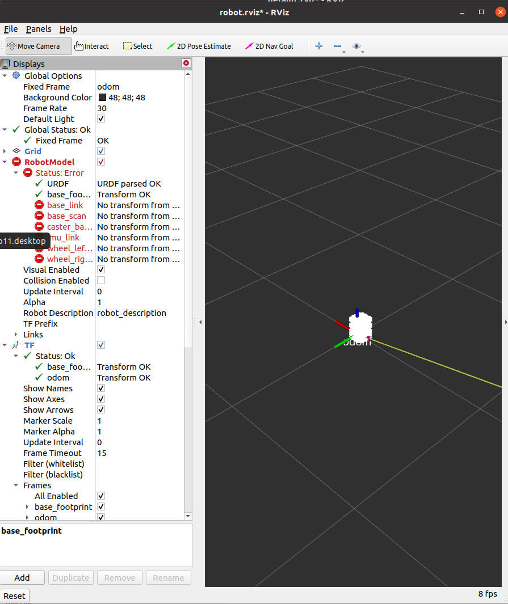

实验二：ROS 基础与通信机制
1. 实验目的
- 理解 ROS 节点（Node）概念
- 掌握话题（Topic）发布-订阅机制
- 掌握服务（Service）请求-响应机制
- 理解 ROS Master 的作用
2. ROS 核心概念
2.1 基本组成
- Node（节点） ：ROS 系统的基本运行单元，每个节点执行特定任务
- Topic（话题） ：节点间通信的命名通道
- Message Type（消息类型） ：定义话题上传输的数据格式
- Master（主节点） ：提供节点间通信的协调服务（需要
roscore）
2.2 通信类型对比
| 通信方式 | 特点 | 使用场景 | 比喻 |
|---|---|---|---|
| Topic | 异步，持续数据流 | 传感器数据、状态信息 | 广播电台 |
| Service | 同步，请求-响应 | 计算、查询、触发动作 | 打电话 |
3. 实验步骤
实验 2.1：体验无通信的孤立程序
cd ~/catkin_ws/src/ros_course_examples/simulation_demo
python3 controller.py
# 终端 2：运行 Motor
cd ~/catkin_ws/src/ros_course_examples/simulation_demo
python3 motor.py
执行效果如图：
观察 ：两个程序各自运行，无法相互通信。
关闭这两个程序吧。
实验 2.2：使用 ROS 实现节点通信
我们可以将代码封装成结点，然后基于ROS框架实现结点通信。
首先进行编译
在终端 1：编译ros工作空间
cd ~/catkin_ws
catkin_make
大概的示意图：

终端 1：启动 ROS Master
roscore

cd ~/catkin_ws/src/ros_course_examples/nodes/
chmod +x motor_node.py
chmod +x controller_node.py

启动通信演示
终端 2：启动电机结点
cd ~/catkin_ws
source devel/setup.bash
rosrun ros_course_examples motor_node.py
你可以发现这个结点（程序）正在等待信息，它的位置并不发生改变。

终端 3：启动控制器结点 接下来，让我们控制它
cd ~/catkin_ws
source devel/setup.bash
rosrun ros_course_examples controller_node.py
观察终端，我们可以发现它正在不断的发送指令：

返回查看终端2（电机结点）

观察到 ：Controller 发送速度指令，Motor 接收并更新位置。
但是，如果每启动一个程序都输入一行指令不会太复杂了吗？
ROS框架中也有自己的“脚本”，可以一键启动多个结点。
关闭终端2和终端3，在终端3中执行：
cd ~/catkin_ws
source devel/setup.bash
roslaunch ros_course_examples ros_communication_demo.launch
你可以观察到，这两个结点都已经启动了。

实验 2.3：TurtleSim 通信实验
可以关闭这个程序了（注意不要关闭roscore的终端）
终端 2：启动 Turtle 仿真
rosrun turtlesim turtlesim_node

终端 3：启动键盘控制
rosrun turtlesim turtle_teleop_key

在终端3中按下方向键可以控制turtle运动。

终端 4：可视化通信图
rqt_graph

通信流程分析 ：
turtle_teleop_key节点监听键盘输入- 发布速度命令到
/turtle1/cmd_vel话题 - 发布到话题中的信息就是线速度和角速度，消息的类型是
geometry_msgs/Twist turtlesim_node订阅/turtle1/cmd_vel- 接收速度命令并执行运动
实验 2.4：查看话题信息
以上这些信息都可以通过ros指令来观察到。
# 列出所有话题
rostopic list
# 查看话题信息
rostopic info /turtle1/cmd_vel
# 查看消息类型定义
rosmsg show geometry_msgs/Twist

# 查看话题数据
rostopic echo /turtle1/cmd_vel

实验三：Gazebo 仿真环境
1. 实验目的
- 掌握 Gazebo 仿真器的使用
- 学会加载和保存仿真世界
- 理解 World 文件结构
- 掌握机器人模型的加载
2. Gazebo 核心功能
- 物理引擎 ：模拟真实物理规律（重力、碰撞、摩擦）
- 传感器仿真 ：激光雷达、相机、IMU 等
- ROS 集成 ：与 ROS 无缝通信
- 可视化 ：3D 场景渲染
3. 实验步骤
3.1 启动空白世界
gazebo

或使用 ROS 启动
source ~/catkin_ws/devel/setup.bash
export TURTLEBOT3_MODEL=burger
roslaunch turtlebot3_gazebo turtlebot3_empty_world.launch

3.2 构建自定义场景
- 插入模型 ：从左侧面板拖拽物体到场景
- 调整参数 ：
- Position (x, y, z)：位置坐标
- Orientation (roll, pitch, yaw)：姿态角度
- Scale：缩放大小
- 保存世界 ：
File → Save World As → my_world.world


3.3 加载自定义世界
gazebo my_world.world
方法 2：ROS launch 文件
source ~/catkin_ws/devel/setup.bash
export TURTLEBOT3_MODEL=burger
roslaunch turtlebot3_gazebo turtlebot3_world.launch

3.4 控制机器人运动
source ~/catkin_ws/devel/setup.bash
export TURTLEBOT3_MODEL=burger
roslaunch turtlebot3_teleop turtlebot3_teleop_key.launch
操作说明 ：
W/A/S/D或方向键：控制移动X：停止Q/Z：增加/减少速度

实验四：RViz 可视化
1. 实验目的
- 掌握 RViz 可视化工具的使用
- 学会添加和配置显示项
- 理解传感器数据的可视化表示
- 掌握界面交互和视角控制
2. RViz 可显示的数据类型
- Robot Model ：3D 机器人模型
- LaserScan ：激光雷达扫描数据
- PointCloud2 ：3D 点云数据
- TF ：坐标系变换关系
- Image ：相机图像
- Odometry ：里程计轨迹
- Path ：规划路径
- Map ：占据栅格地图
3. RViz 启动方式介绍
直接启动
rviz

3.1 RViz 界面基础操作
视角控制
- 🖱️ 鼠标左键拖拽 ：旋转视角
- 🖱️ 鼠标滚轮 ：缩放视图
- 🖱️ Shift + 左键拖拽 ：平移视图
- 🖱️ Shift + 滚轮 ：上下平移
- 🖱️ 鼠标中键拖拽 ：平移（某些系统）
界面布局说明
┬──────────────────────────────────────────┬
│ 菜单栏 (File / View / Panels) │
├──────────┬──────────────────────┬────────┤
│ │ │ │
│ Displays │ 3D 视图窗口 │ 工具栏 │
│ 面板 │ (主显示区域) │ Views │
│ │ │ Time │
└──────────┴──────────────────────┴────────┘
4. 实验步骤
4.1 启动仿真和可视化
# 终端 1：启动 gazebo
roslaunch turtlebot3_gazebo turtlebot3_world.launch
# 终端 2：启动 RViz
roslaunch turtlebot3_rviz_launchers view_robot.launch

4.2 添加显示项（Display）详细步骤
示例1：添加激光雷达数据
- 点击左下角 "Add" 按钮
- 在弹出窗口中选择 "By display type" 标签
- 找到并双击 "LaserScan"
- 在左侧 Displays 面板中展开 "LaserScan"
- 配置参数：Topic: /scan # 点击下拉选择 /scan Size (m): 0.05 # 调整点的大小 Style: Points # 显示样式 Color Transformer: Intensity # 颜色映射
- 观察红色扫描点显示障碍物位置
示例2：添加里程计轨迹
- 点击 "Add" → 选择 "Odometry"
- 配置参数：Keep: 100 # 保留 100 条历史轨迹 Shape: Arrow # 显示为箭头 Color: 0; 0; 255 # 蓝色 (RGB) Alpha: 1.0 # 不透明度 Shaft Length: 0.3 # 箭头长度
- 机器人移动时会显示蓝色轨迹线
示例3：添加坐标系（TF）
- 点击 "Add" → 选择 "TF"
- 配置参数：✓ Show Axes # 显示坐标轴 ✓ Show Arrows # 显示箭头 Marker Scale: 0.5 # 调整坐标轴大小 Update Interval: 0 # 更新频率（0=最快）
- 观察红绿蓝箭头（代表 X/Y/Z 轴）
4.3 常用显示项配置表
| 显示类型 | 推荐话题 | 作用 | 关键参数 |
|---|---|---|---|
| RobotModel | (默认) | 显示机器人3D模型 | Robot Description: robot_description |
| LaserScan | /scan |
激光雷达扫描数据 | Size: 0.05, Style: Points |
| Odometry | /odom |
里程计轨迹 | Keep: 100, Shape: Arrow |
| Path | /move_base/global_plan |
全局规划路径 | Color: 255;255;0 (黄色) |
| TF | (无需设置) | 坐标系关系 | Show Names: ✓, Marker Scale: 0.5 |
| Image | /camera/rgb/image_raw |
相机图像 | Transport Hint: raw |
| Map | /map |
占据栅格地图 | Color Scheme: map |
4.4 调整 Fixed Frame（参考坐标系）
什么是 Fixed Frame？
- RViz 中所有数据的显示都需要一个参考坐标系
- 不同场景需要选择不同的 Fixed Frame
选择建议
| 场景 | Fixed Frame | 效果 |
|---|---|---|
| 观察机器人运动 | odom |
视角跟随机器人 |
| 查看全局地图 | map |
固定不动的世界视角 |
| 调试传感器 | base_link |
视角锁定在机器人上 |
设置方法
- 在顶部 "Global Options" 展开
- 点击 "Fixed Frame" 下拉菜单
- 选择
odom或map
⚠️ 注意 ：如果 Fixed Frame 设置错误，所有显示项会变灰色或不显示。
4.5 查看 TF 树
方法1：在 RViz 中查看
- 添加 TF 显示项
- 勾选 "Show Names" 和 "Show Axes"
- 观察坐标系之间的层级关系
方法2：生成 TF 树图（推荐）
#
rosrun tf2_tools view_frames.py
# 等待 5 秒后自动生成 frames.pdf
evince frames.pdf # 或用其他 PDF 阅读器打开
查看 TF 变换
TF 树结构示例
└─ odom
└─ base_footprint
└─ base_link
├─ camera_link
│ └─ camera_rgb_frame
├─ imu_link
└─ base_scan (laser_link)
6. 常见问题排查
| 问题 | 原因 | 解决方法 |
|---|---|---|
| ❌ 显示项变红色/灰色 | 话题未发布 | rostopic list 检查话题是否存在 |
| ❌ 看不到机器人模型 | Fixed Frame 错误 | 改为 odom 或 base_link |
| ❌ 激光数据不显示 | Topic 选择错误 | 确认为 /scan |
| ❌ TF 显示 "No transform" | TF 树不完整 | 检查 rosrun tf view_frames |
课后练习建议
- 多练习 Linux 命令行操作
- 尝试修改示例代码参数，观察效果
- 使用
rqt_graph和rostopic工具分析系统 - 阅读 ROS Wiki 官方文档